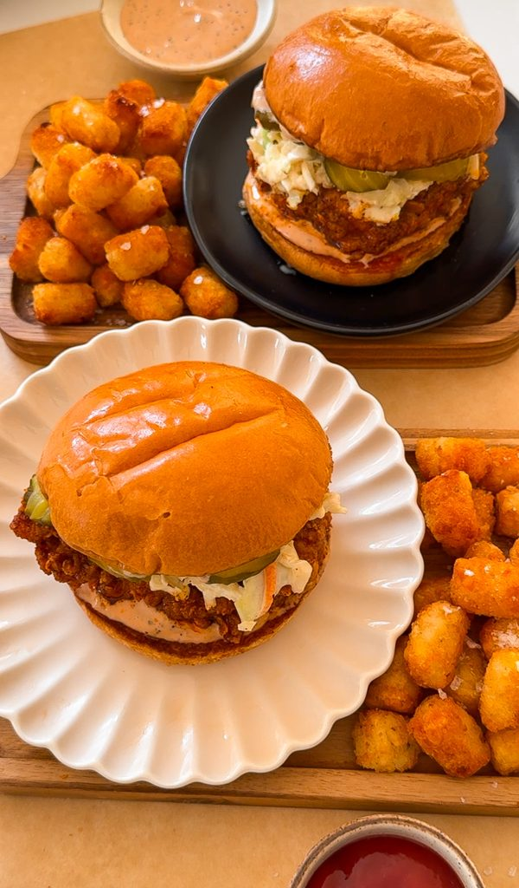

PREP TIME 30 MINUTES
COOK TIME 1 HOUR
TOTAL TIME 1 HOUR 30 MINUTES
YIELDS 4 TO 6 SANDWHICHES
The hot chicken craze is taking over the food scene like wildfire but let me tell you, the best Nashville chicken you can get is the one you make at home and even better! From the crispy flakey fried chicken to the creamy coleslaw and tangy sauce, this sandwich is built to perfection in the flavor AND texture department. Now let's dive into the secret formula for Nashville Hot Chicken Sandwiches!
JUMP TO RECIPIEThe hot chicken craze is taking over the food scene like wildfire but let me tell you, the best Nashville chicken you can get is the one you make at home and even better! From the crispy flakey fried chicken to the creamy coleslaw and tangy sauce, this sandwich is built to perfection in the flavor AND texture department. Now let's dive into the secret formula for Nashville Hot Chicken Sandwiches!
We are going to work backward with this recipe! Although the chicken is obviously the star of the recipe, making the sauce and coleslaw comes first so the chicken can be enjoyed straight from the fryer. Since fried chicken can be a bit heavier and in this case with Nasvhille-style, very spiced, it's important to add some refreshing more tangy elements. The coleslaw adds a nice crunch and refreshing taste while the sauce adds a creamy texture but is also a bit tangy.
Let's start with the sauce! In a bowl, mix together mayonnaise, ketchup, garlic powder, Worcestershire sauce, and black pepper until well combined. The color will be a light pink/orange color. Raising Cane's sauce is my favorite to enjoy with fried chicken so this recipe is meant to be a copycat. Cover and set aside until we need it!
As for the coleslaw, combine shredded cabbage and carrots in a bowl, then dress it with a mixture of mayonnaise, yellow mustard, apple cider vinegar or lemon juice, sugar, salt, and black pepper. Let the coleslaw chill in the refrigerator for at least 30 minutes before serving, allowing the flavors to develop. You can buy a coleslaw blend from the grocery store or just purchase cabbage and carrot and shred it yourself. Now that those components are prepared, we can move on to the chicken!
The journey to crafting the perfect Nashville hot chicken sandwich begins with the chicken itself. Start by marinating boneless, skinless chicken breasts or thighs in buttermilk for at least an hour, or preferably overnight, in the refrigerator. This step not only tenderizes the chicken but also infuses it with flavor. For the crispy coating, create a seasoned flour mixture by combining all-purpose flour with salt, black pepper, garlic powder, onion powder, cayenne pepper, and paprika. For an extra crunch, consider adding a touch of cornstarch or panko breadcrumbs to the mix. Dredge the marinated chicken in the seasoned flour until fully coated, then fry it in hot oil until golden brown and crispy on the outside, yet juicy on the inside.
Now, let's turn up the heat. Nashville hot chicken wouldn't be complete without its signature spicy seasoning. In a bowl, mix together cayenne pepper, paprika, brown sugar, salt, black pepper, garlic powder, and onion powder. To create a paste, add vegetable oil or melted butter to the spice mixture. For those who crave even more spice, a splash of hot sauce can be added to the mix. Adjust the spice level according to your preference, ensuring it strikes the perfect balance of heat and flavor.
Now that all the components are ready, it's time to assemble the sandwich. Toast soft buns until golden brown and warm. Spread a thin layer of the spicy sauce on the bottom bun, then top it with a piece of crispy fried chicken. Add a few slices of tangy pickles and a generous spoonful of coleslaw. Finally, crown the sandwich with the top bun and press down gently to secure all the layers.
Serve your Nashville hot chicken sandwich alongside your favorite sides, such as crispy fries, creamy coleslaw, or a refreshing cucumber salad. Pair it with a cold beer or a tall glass of sweet tea to help cool down the heat. With its perfect combination of crispy, spicy chicken and tangy toppings, this iconic Southern dish is sure to become a favorite in your kitchen.
